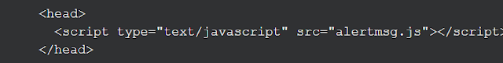

Một số kiến thức cơ bản về JavaScript
1. Ưu điểm của JavaScript
- Tiết kiệm lưu lượng tải ở Server: Khi sử dụng JavaScript ta có thể nhận dữ liệu đầu vào (input) từ người dùng và xác nhận chúng trước khi gửi lên Server, điều này nghĩa là Server của bạn sẽ tải ít hơn và tiết kiệm lưu lượng hơn.
- Giảm thời gian phản hồi lại người dùng: Người dùng sẽ không phải chờ dữ liệu gửi lên Server và kiểm tra rồi phản hồi lại. Đặc biệt là trong trường hợp người dùng nhập thiếu hay nhập sai thông tin.
- Tăng sự tương tác với người dùng: Ta có thể tạo những giao diện để phản hồi lại các thao tác của người dùng như di chuyển con trỏ qua hoặc kích hoạt bằng bàn phím,...
- Giao diện phong phú, sống động hơn: Ta có thể sử dụng JavaScript để tạo các thành phần Drag and Drop ( kéo và thả) hay các slider ( con trượt) để tạo một giao diện giàu tính năng tới người dùng.
2. Nhược điểm của JavaScript
- Dễ bị khai thác bởi vì bảo mật của ngôn ngữ này không được đánh giá cao.
- Dễ bị sử dụng để thực thi mã độc trên thiết bị của người dùng.
- Không phải trình duyệt nào và lúc nào cũng hỗ trợ JavaScript.
3. Các cách sử dụng JavaScript trong thiết kế website HTML
Giống như CSS, ta cũng có ba cách để sử dụng JavaScript trong chương trình HTML đó là : Inline, Internal và External.
Với kiểu Inline, bạn có thể viết trực tiếp mã code JS vào một phần tử HTML.
Với kiểu Internal, bạn có thể viết mã code JS nằm bên trong cặp thẻ <script></script> và đặt chúng ở trong thẻ <head> hoặc <body> của file HTML đều được.

Với kiểu External, tương tự như CSS, bạn có thể tạo một file có đuôi .js và viết mã code vào trong đó rồi nhúng vào trong thẻ <head> của file HTML. Giả sử ta đã tạo một file JS có tên alertmsg.js, khi đó ta có thể nhúng nó vào file HTML như sau:
4. Bảng điều khiển-Console
Trong JavaScript, từ khoá "console" đề cập đến một đối tượng, một tập hợp dữ liệu và hành động mà chúng ta có thể sử dụng trong mã code của mình. Và bảng điều khiển "console" là một bảng hiển thị những thông báo quan trọng hay lỗi,... cho chúng ta có thể thấy rõ ràng hơn.
console.log(): method ".log" là một trong những method của hàm console. Tất cả những gì ta viết trong cặp ngoặc tròn () sẽ được hiển thị trên bảng điều khiển, nó có thể là một số, một giá trị của một biến, một mảng hay một object,...
Hình ảnh trên là cách sử dụng console.log(). Khi ta mở bảng console, số 5 sẽ được in trên đó.
5. Kiểu dữ liệu
Trong JS, có 7 kiểu dữ liệu cơ bản:
- Number: Kiểu số, bất kì số nào kể cả số thập phân.
- String: Chuỗi các kí tự nhập vào từ bàn phím bao gồm cả các kí tự đặc biệt và viết trong dấu ' ' hoặc dấu " ".
- Boolean: Kiểu dữ liệu này chỉ có 2 giá trị là true hoặc false. Sẽ thuận tiện hơn khi sử dụng Boolean như một công tắc bật-tắt hay cho những câu hỏi chỉ có lựa chọn "có" hoặc "không" .
- Null: Kiểu dữ liệu này thể hiện sự vắng mặt có chủ đích của một giá trị và được đại diện bởi từ khoá null (không cần dấu ngoặc kép).
- Undefined: Kiểu dử liệu này được kí hiệu bằng từ khoá undefined(không cần dấu ngoặc kép). Nó cũng đại diện cho sự vắng mặt của một giá trị mặc dù cách dùng khác với null.
- Symbol: Là một kiểu dữ liệu nguyên thuỷ, và cũng là một kiểu dữ liệu rất đặc biệt. Khi ta tạo một symboltrong JS, giá trị của nó được giữ kín và chỉ được sử dụng nội bộ.
- Object: Là một kiểu dữ liệu phức hợp. Object được sử dụng nhiều nhất vì tính linh hoạt cực kì mạnh mẽ của nó trong việc xử lý dữ liệu.
6. Các toán tử số học trong JavaScript
JS có một số toán tử được tích hợp sẵn, cho phép ta thực hiện với những con số. Cụ thể:
- Phép trừ: -
- Phép cộng: +
- Phép nhân: *
- Phép chia: /
- Lấy số dư: %
Đặc biệt, Toán tử (+) còn được sử dụng trong việc nối các chuỗi kí tự. Các bạn có thể tìm hiểu thêm qua các khoá học JavaScript trên codecademy và F8 fullstack.
7. Tổng kết
JavaScript không phải là một ngôn ngữ lập trình dộc lập, nó được tích hợp và nhúng vào file HTML để tạo nên sự
sống động cho website HTML. Mặc dù có những khuyết điểm, nhưng nhìn chung JavaScipt vẫn là một ngôn ngữ được ưu tiên và sử dụng nhiều
trong thiết kế website.
JavaScript cũng có cách sử dụng giống CSS là inline, internal và external.
JavaScript cũng có các biến được khai báo bởi các từ khoá var, let, const, cũng như các phép toán cơ bản nhằm thực hiện những
tác vụ nhất định. Bên trên mình đã đề cập tới 2 trang web học JavaScript tốt, chúc các bạn thành công!